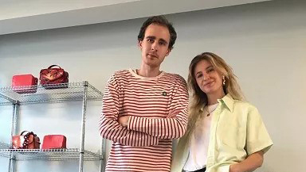
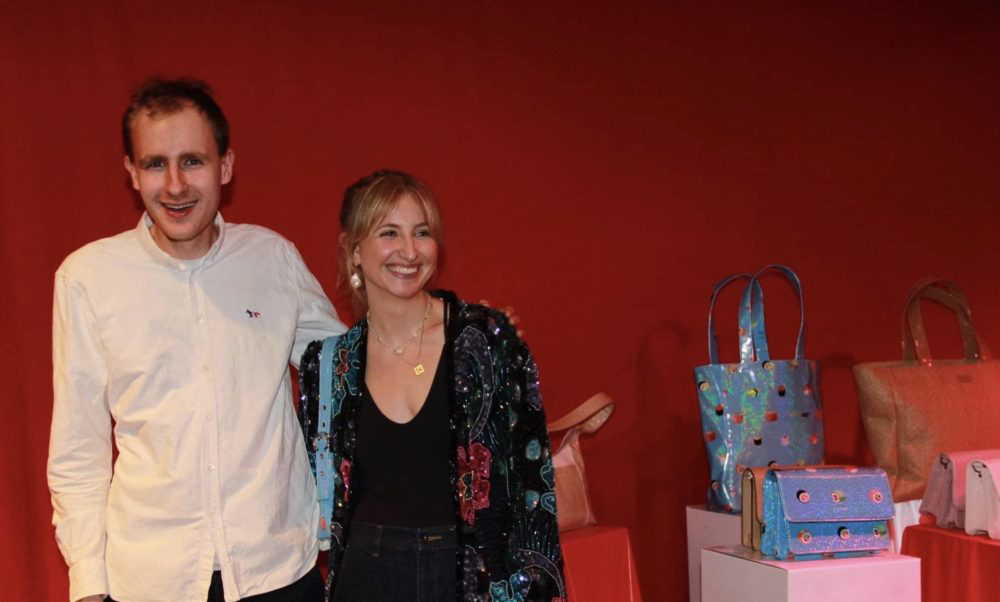

Sustainability is a fuzzy word. At SILFEN it means putting action behind the words, considering all stakeholders and always aiming a little bit higher when creating another collection. As a young, global fashion brand, it is our duty to take care of the planet, not only for own sake, but for all future generations to come.

ABOUT US

Silfen is a Danish accesorry brand established in 2013. The brand is characterized by high quality products created in genuine materials. The primary focus is on designing products that reflect the trends of each season, but timeless classics are also a part of the portfolio. Behind Silfen stands the siblings Daniel and Celine Silfen. Both have a deep passion for danish design and growing up, their childhood was filled with beautiful bags. They love the build up the brands DNA with a new and playful aesthetic towards the key accesory - the bag.

In the future, silfen is working on colorful designs in different kinds of material. They love to play with textures and a wide range of materials in order to challenge their own perception of creating new styles. Designer Daniel Silfen is never afraid of trying new combinations in order to continously developing the brand. The aim with the brand is to offer high quality products in a though through design at reasonable prices.